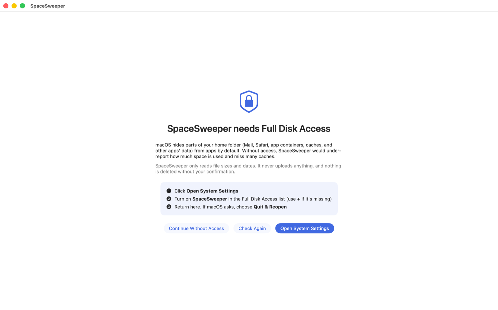

Install in four steps
About five minutes, once. You need a Mac with macOS 14 Sonoma or later and your Mac's password for step 3.
-
Download it
Click the button. Your browser saves SpaceSweeper.dmg to your Downloads folder.
Which Macs? Any Mac with macOS 14 Sonoma or newer, Apple chip or Intel. Not sure? Click the Apple menu in the top-left corner and choose About This Mac. -
Drag it to Applications
- Open your Downloads folder and double-click SpaceSweeper.dmg.
- A window opens with SpaceSweeper and an Applications folder.
- Drag the SpaceSweeper icon onto the Applications folder.
- Close the window. You can drag SpaceSweeper.dmg to the Trash.
Opened it straight from the window? That's fine: SpaceSweeper offers to move itself to Applications. Click Move to Applications so it remembers its permissions. -
Open it the first time
SpaceSweeper is free and isn't part of Apple's paid developer program, so macOS asks you to confirm it once:
- Open Applications and double-click SpaceSweeper.
- macOS says it can't check the app. Click Done (or OK).
- Open System Settings from the Apple menu, then click Privacy & Security in the sidebar.
- Scroll down to the message about SpaceSweeper and click Open Anyway.
- Enter your Mac's password, then click Open Anyway once more.
Only once After this, SpaceSweeper opens like any other app, and updates install from inside the app without asking again. On macOS 14 you can also Control-click the app, choose Open, then Open again. -
Allow Full Disk Access
SpaceSweeper shows this screen when it first opens. It needs access to measure folders macOS hides, like Mail and other apps' data.
- Click Open System Settings.
- Turn on the switch next to SpaceSweeper and enter your password.
- If macOS asks, click Quit & Reopen. Then click Start Scan.

Updates
SpaceSweeper checks for updates by itself and asks before installing. To check now, choose SpaceSweeper › Check for Updates… in the menu bar.
Removing it
Quit SpaceSweeper and drag it from Applications to the Trash. Its saved scan is in ~/Library/Application Support/SpaceSweeper if you want to remove that too.
Stuck?
Ask whoever sent you this page, or report a problem. Inside the app, Help in the sidebar explains every rating.